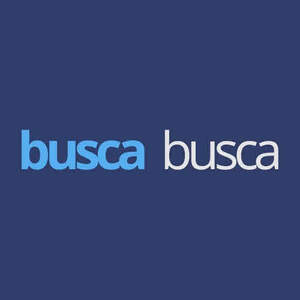

Trade Mark Journal No.2026/010 6 March 2026
UK00004342942 19 February 2026 (35)

- Class 35
- Administration of shopping centres; Commercial agency services [intermediation]; Business management consultancy; Promotional advisory services, advertising consultancy and information; Retail and wholesale services, including via electronic means, relating to stationery and household stickers; Retail and wholesale services, including via electronic means, relating to pins and needles [haberdashery articles]; Retail and wholesale services, including via electronic means, relating to heating apparatus; Retail and wholesale services, including via electronic means, relating to cooking apparatus; Retail and wholesale services, including via electronic means, relating to lighting apparatus; Retail and wholesale services, including via electronic means, relating to ventilation apparatus; Retail and wholesale services, including via electronic means, relating to cinematographic apparatus and instruments; Retail and wholesale services, including via electronic means, relating to weighing apparatus and instruments; Retail and wholesale services, including via electronic means, relating to photographic apparatus and instruments; Retail and wholesale services, including via electronic means, relating to optical apparatus and instruments; Retail and wholesale services, including via electronic means, relating to bed, table and bath linen; Retail and wholesale services, including via electronic means, relating to headwear; Retail and wholesale services, including via electronic means, relating to hardware; Retail and wholesale services, including via electronic means, relating to stationery articles; Retail and wholesale services, including via electronic means, relating to horological articles; Retail and wholesale services, including via electronic means, relating to glassware; Retail and wholesale services, including via electronic means, relating to pet products; Retail and wholesale services, including via electronic means, relating to sporting articles; Retail and wholesale services, including via electronic means, relating to bicycles and bicycle accessories; Retail and wholesale services, including via electronic means, relating to handbags; Retail and wholesale services, including via electronic means, relating to carpets and rugs; Retail and wholesale services, including via electronic means, relating to playing cards; Retail and wholesale services, including via electronic means, relating to safes; Retail and wholesale services, including via electronic means, relating to cosmetics; Retail and wholesale services, including via electronic means, relating to Christmas tree decorations; Retail and wholesale services, including via electronic means, relating to brushes; Retail and wholesale services, including via electronic means, relating to mirrors; Retail and wholesale services, including via electronic means, relating to hand tools; Retail and wholesale services, including via electronic means, relating to textile threads and fibres; Retail and wholesale services, including via electronic means, relating to ribbons and bows; Retail and wholesale services, including via electronic means, relating to artificial flowers; Retail and wholesale services, including via electronic means, relating to umbrellas; Retail and wholesale services, including via electronic means, relating to games and toys; Retail and wholesale services, including via electronic means, relating to books; Retail and wholesale services, including via electronic means, relating to suitcases and travel bags; Retail and wholesale services, including via electronic means, relating to machine tools; Retail and wholesale services, including via electronic means, relating to printed matter; Retail and wholesale services, including via electronic means, relating to backpacks; Retail and wholesale services, including via electronic means, relating to frames; Retail and wholesale services, including via electronic means, elating to furniture; Retail and wholesale services, including via electronic means, relating to cooking utensils and pans; Retail and wholesale services, including via electronic means, relating to paintbrushes; Retail and wholesale services, including via electronic means, relating to perfumery products; Retail and wholesale services, including via electronic means, relating to clothing; Retail and wholesale services, including via electronic means, relating to bags and sacks; Retail and wholesale services, including via electronic means, relating to fabrics; Retail and wholesale services, including via electronic means, relating to tents; Retail and wholesale services, including via electronic means, relating to household or kitchen utensils and containers; Retail and wholesale services, including via electronic means, relating to vehicles; Retail and wholesale services, including via electronic means, relating to candles; Business management consultancy services.
CHEFE DO BENEFÍCIO LTDA
Representative: HGF Limited